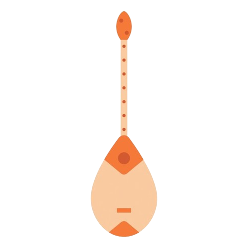

ДОМБРА — 2 СТРУНЫ
Верхняя струна (В)
Первая струна (Ре / D3)
Ре
D3 · 146.83 Гц
Нижняя струна (Н)
Вторая струна (Соль / G3)
Соль
G3 · 196.00 Гц
Советы по настройке
Колки
Крути колки медленно! Влево — ниже, вправо — выше.
Слух
Сравни звук своей струны с эталоном.
Температура
На холоде струны опускаются, настраивай в тепле.
Гриф
Не дави сильно на гриф при настройке.
ТЮНЕР ДОМБРЫ
---
Сыграй струну!
Нажми, чтобы тюнер услышал твою домбру
Строение домбры

1 Колки (Құлақ)
Колки для натяжения и настройки струн
2 Гриф (Мойын)
Гриф с перне (ладами), где зажимают ноты
3 Дека (Бет)
Передняя крышка (дека), передающая звук
4 Корпус (Шанақ)
Задний купол, усиливающий звучание
Библиотека кюев
20 шынайы күй мен ән (dombyra-kz)
ГРИФ ДОМБРЫ (ИНТЕРАКТИВНЫЕ ЛАДЫ)
Домбра-Караоке (Микрофон)
Возьми домбру в руки, играй ноты точно в ритм и набирай очки!
Очки
0
Точность
100%
Комбо
Ожидаемая нота
Н: 0 · В: 0
Частота микрофона
--- Гц